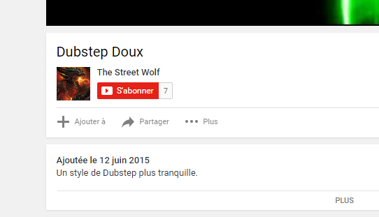
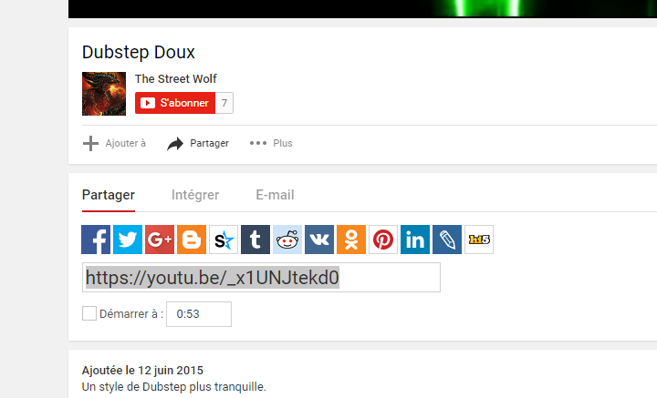
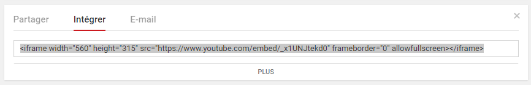

Il faut savoir que le problème du format vidéo c'est qu'il prends énormément de place. En effet chaque ordinateur n'a pas forcément les bons codecs d'installer pour pouvoir décoder une vidéo. Aisni nous sommes dans l'obligations d'encoder la vidéo dans plusieurs formats afin de visualiser son contenu.
A savoir que le le format WEBM est annoncé. Il permet ainsi de proposer un format multimédia ouvert. Mais surtout il est conçus principalement pour un usage sur le web. Et donc vous comprendrez qu'on y gagnera énormément en place en ne proposant qu'une vidéo encoder au format webM avec une compression tel qu'on gagne énormément en place... Avant.. plusieurs vidéos avec des formats différents... nous n'étions jamais sur que l'ordinateur cible serait succeptible de lire la vidéo.
Lien vers un convertisseur de vidéo MP4 en WEBM : https://convertio.co/fr/mp4-webm/
La base de la balise video
Les attributs de la balise video
controls Permet d'avoir une barre de contrôle
preload="auto" Si la personne ne regarde pas la vidéo, il est inutile de recharger cette dernière.
preload="auto" autobuffer Équivalent que précédemment mais pour firefox.
none la vidéo ne doit pas être préchargée.
metadata seules les métadonnées de la vidéo (sa durée par exemple) sont récupérées.
auto Le fichier entier peut être télécharger même si l'utilisateur ne l'utilise pas.
une chaine de caractère vide Synonyme de valeur automatique
autoplay="true" Permet de lancer automatiquement la vidéo au chargement de la page.
poster="toto.png" Permet d'afficher une image au lieu d'un écran noir
loop="true" Permet de jouer la vidéo en boucle.
muted="true" Permet de couper le son de la vidéo à son lancement.
La balise track permet via des attributs d'ajouter des sous-titres.
default Cet attribut booléen indique que c'est cette piste qui doit être activée par défaut, sauf si les réglages de l'utilisateur indiquent qu'une autre piste est plus appropriée. Pour un élément média donné, il ne peut y avoir qu'une seule piste avec cet attribut.
kindLa façon dont la piste texte doit être utilisée. La valeur par défaut est subtitles et si la valeur fournie est incorrecte, l'agent utilisateur doit utiliser la valeur metadata. Cet attribut est un attribut à valeur contrainte qui peut prendre l'une des valeurs suivantes :
subtitles
Les sous-titres fournissent une traduction du contenu lorsqu'il ne peut pas être compris par l'utilisateur. La piste peut, par exemple, contenir le texte espagnol d'un film joué en anglais.
Les sous-titres peuvent fournir du contenu supplémentaires, généralement des informations de contexte (par exemple, le texte qui défile au début d'un film Star Wars, la date ou le lieu d'une scène, etc.).
captions
La piste est une retransciption voire une traduction de la partie audio dud média.
La piste peut contenir des informations non-verbales importantes comme des indications musicales ou des effets sonores. La piste peut également indiquer la source du bruit (musique, personnage, etc.).
Ce type de piste est adapté aux utilisateurs malentendants ou lorsque le son est désactivé.
descriptions
La piste est une description textuelle du contenu vidéo.
Ce type de piste est adapté aux personnes malvoyantes ou lorsque la vidéo ne peut pas être vue.
chapters
Les titres de chapitre utilisés lorsque l'utilisateur navigue au sein du média.
metadata
La piste est utilisé par des scripts, elle n'est pas visible pour l'utilisateur.
label Le titre associé à la piste et qui est affiché par le navigateur lorsque celui-ci liste les pistes disponibles.
src L'adresse du fichier pour la piste (celle du fichier.vtt). Cet attribut doit être une URL valide et doit nécessairement être présent dans l'élément.
srclang La langue dans laquelle est exprimée la piste textuelle. La valeur de cet attribut doit être une balise de langue BCP 47. Si l'attribut kind vaut subtitles, l'attribut srclang doit obligatoirement être défini. (fr pour france ; en pour anglais etc...)
Grâce à la balise iframe, on peut importer une video très simplement.
Dans un premier temps, on se rends sur youtube, on choisit une vidéo quelconque, pour mon cas, se sera Dubstep Doux

Ensuite, on clic sur Partager. Un nouveau menu apparaît :

Sur ce nouveau menu, sélectionnons Intégrer. Là vous allez avoir la balise iframe ainsi que le contenu de la video que vous voulez :

Il ne vous reste plus qu'à la coller où bon vous semble dans votre code.